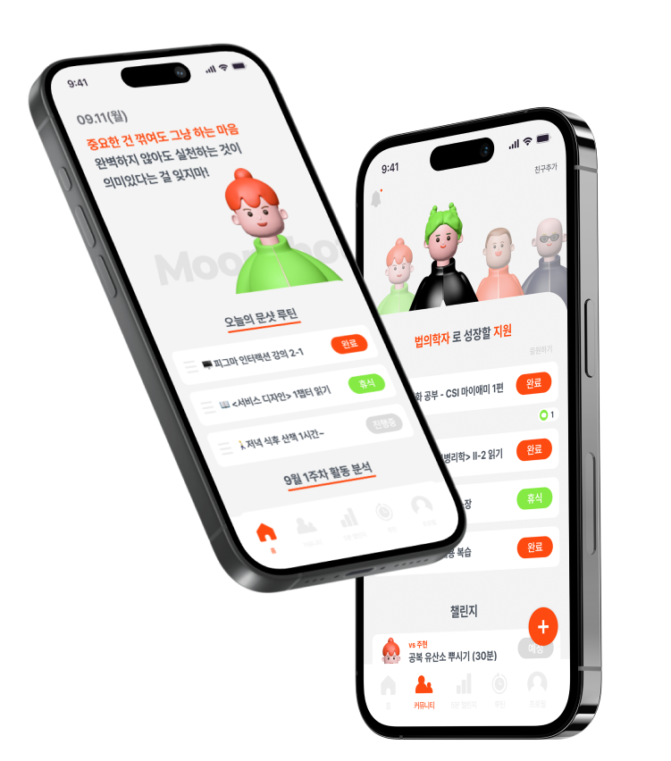
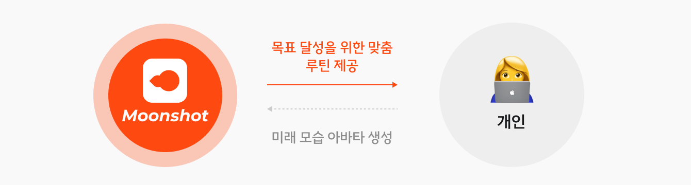
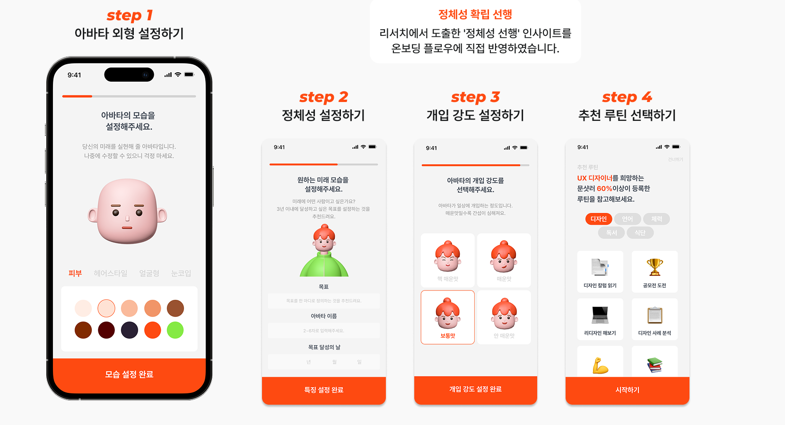
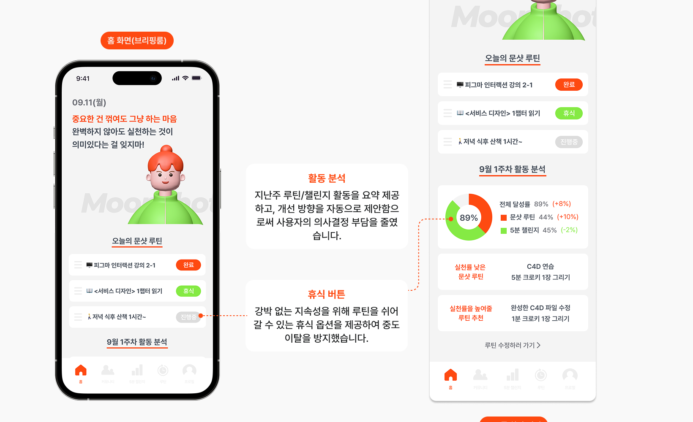
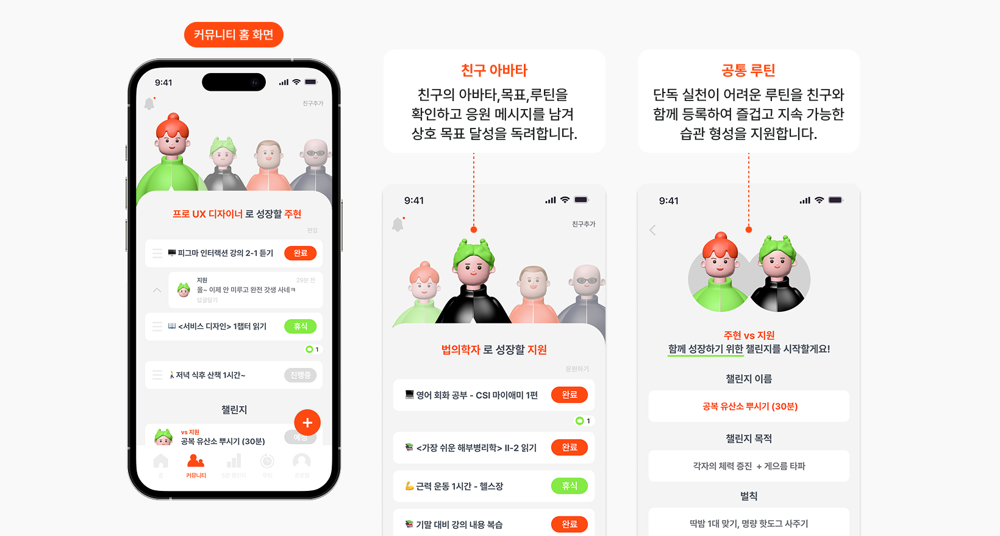
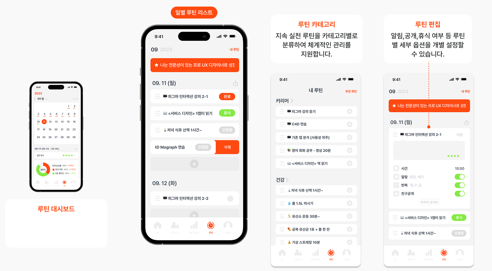
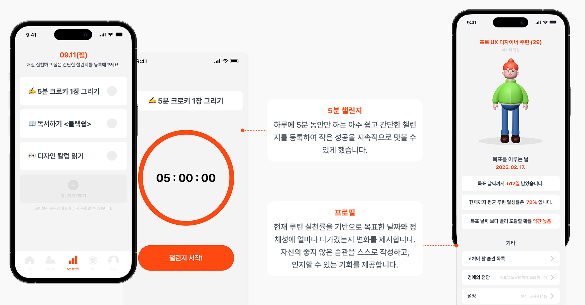
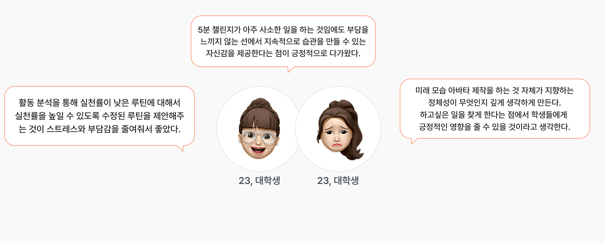

미래 모습 아바타를 통한 바른 생활 습관 형성 서비스
과도한 자기계발 문화에서 비롯된 인정 욕구, 상대적 박탈감, 강박에서 벗어나
개인 고유의 미래 비전을 기반으로 지속 가능한 습관과 루틴을 형성하도록 돕는 서비스입니다.

성장 의지는 있지만, 또래 의식과 경쟁적 환경이 나만의 건강한 루틴 형성을 가로막고 있었습니다.
작은 목표에서 출발해 개인 패턴에 맞는 루틴을 발견하고, 경쟁 없이 함께 성장할 수 있는 서비스에 대한 니즈가 도출되었습니다.
단기간 내 새로운 행동을 습관으로 정착시키기 어려움
나에게 맞는 루틴을 찾는 과정 자체가 소모적
타인의 인증 컨텐츠에 흔들리지 않는 근거 필요
함께하되 경쟁적이지 않은 교류 환경이 필요
현실의 10배를 목표로 삼는 급진적 사고방식,
불가능을 실현 가능한 것으로 전환하는 사고 프레임
이상적 미래 자아를 아바타로 시각화하고,
개인 맞춤 루틴으로 습관 형성을 실현하는 서비스
정체성 확립이 선행될 때 건강한 습관 형성이 가능함을 확인했습니다.
미래 모습을 구체적으로 형상화할수록 정체성 확립에 효과적이며,
아바타를 통한 시각화가 자기 인식과 동기 유지에 긍정적으로 작용함을 확인했습니다.
목표 방향성을 유지함으로써 현재의 자아를
'비전을 가진 미래의 자아'로 점진적으로
이끄는 심리적 기제
목표를 심상으로 구체화하여 실제 수행에 적
용하는 인지 훈련 방법론
디지털 자아인 아바타에 자신의
특성을 투영함으로써 자기 인식을
강화하고 내적 동기를 증진하는
긍정적 도구로 활용
미래 모습 아바타 만들기
자신의 정체성을 정의하고 미래 모습을 아바타로 시각화합니다.
온보딩 완료 후, 유사한 목표를 가진 사용자들의 루틴을 기반으로 초기 맞춤 루틴을 추천합니다.

브리핑룸
하루를 시작하기 전, 오늘의 루틴과 지난 활동을 한눈에 파악하는 홈 화면입니다.
매일 새로운 동기부여 문구를 제공하며, 등록된 루틴을 홈 화면 최상단에 배치하여 접근성과 직관성을 높였습니다.

커뮤니티
자신의 정체성과 목표를 타인과 공유하고, 서로 응원하며 긍정적 영향을 주고받는 커뮤니티 공간입니다.
리서치에서 확인된 '비경쟁적 협력 환경' 니즈를 반영하여, 순위나 비교 지표 없이 응원과 공동 실천 중심의 커뮤니티로 설계했습니다.

루틴 관리
이상적 미래 자아를 향한 일별 루틴을 설정하고 관리합니다.
목표 문구를 화면 상단에 상시 노출하여 자기 동기를 지속적으로 환기할 수 있도록 설계했습니다.

5분 챌린지 & 프로필
하루 5분의 간단한 챌린지로 부담 없이 작은 성공을 쌓습니다.
프로필에서는 루틴 실천률을 기반으로 목표 날짜와 정체성에 얼마나 다가갔는지 변화를 제시합니다.

사용성 테스트
Figma를 통한 간단한 프로토타이핑 완료 후, 맥락적 인터뷰를 했던 대상자에게 사용자 테스트를 진행했습니다.
